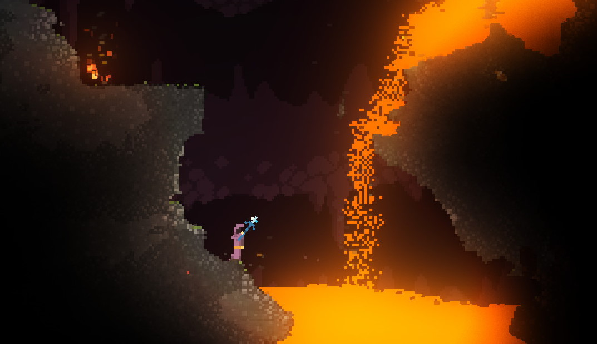

simulake
Joe Mo, Atharva Patil, May Liu, Viraat Chandra
Project Milestone
Overview
Through this project, we aim to implement fluid simulation in a cell based format, as opposed to a traditional particle based format. We use a concept called Cellular Automata (CA) - discrete mathematical models that apply on a grid of cells, where each cell has a finite number of possible states. The states of the cells change over time based on a set of rules that define how the state of a cell is affected by its neighboring cells.

The kind of scene we’re aiming to simulate.
Renderer Progress
- Grid Generation and Vertex Submission: This involved the generation of grid geometry and the submission of vertex data to the GPU. This involved creating a flexible grid structure, taking into account the grid dimensions and cell size. The grid generation function was developed to create a quad for each cell using vertex buffer objects (VBOs) and element buffer objects (EBOs).
- Shader Integration: Custom vertex and fragment shaders were developed to process the vertex data and render the grid according to the cell type and mass values. The shaders were designed to receive grid data as a 2D texture.
- Texture-based Grid Data: Grid data was passed to the shaders using a 2D texture.The fragment shader then samples the texture to access cell data, such as cell type and mass, to render the grid with appropriate colors.
- Debugging and Optimization: These included initial black screen rendering issues, segfaults, and the grid rendering in the bottom-left corner.
- Current Status and Next Steps: The renderer is now functioning correctly. The next steps in the project is to integrate the renderer into the larger application. We’ve profiled the renderer and discovered it takes around 16ms in its current state to both load new grid state and render a frame.

Test render of 200x150 cell grid with random sand/water/air cells
Simulator Progress
We created Grid and Cell data structures, and architected an interface for the cellular automata algorithm to update and communicate with the renderer and vice versa. As for our primary materials, sand and water:
- We wrote the basic cellular automata logic for sand.
- At each given step, a sand cell will fall to the cell right below if such cell is empty, otherwise it will fall to the side if any of the side cells are empty.
- Else, the sand cell stays put.
- Similarly, we wrote the cellular automata rules for water flow. Unlike sand, water is compressible, so we also added a mass attribute for each pixel to take into account partially full water pixels and pressurized pixels, for both lateral and vertical flow.
- Although the code for water still needs debugging, ultimately it is just a set of rules with edge cases so we expect to finish this soon.

Sanity testing our sand simulation (cell size = 3)
Sanity testing our sand simulation (cell size = 1)
Original Plan | Updated Plan |
Week 1: - Research and study cellular automata principles and techniques.
- Finalize the list of substances to be rendered and interaction rules.
- Start work on the rendering engine
Week 2: - Take the render and simulation engine to completion.
- Begin rendering simple scenes (e.g. with water and sand).
Week 3: - Optimize the performance of the system.
- Integrate additional substances and interactions.
Week 4: - Develop the interactive demo.
- Perform performance evaluations and finalize the project.
| Week 1: - Completed according to plan.
Week 2: - In progress - we have the renderer and a naive simulation working separately, but we still need to connect them together.
Week 3 (now): - Finish the renderer and cellular automata rules, and connect them (should be done in 1-2 days).
- Render simple scenes.
Week 4: - Add more substances and interactions.
- Develop the interactive demo.
- Perform performance evaluations and finalize the project.
Comments: - While we were originally on track, the midterm delayed our progress in week 2 so we plan to work faster in week 3.
- We realized cell based rendering is already much faster than raytracing, so performance may not be a huge concern.
|
Resources